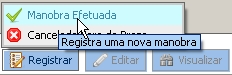
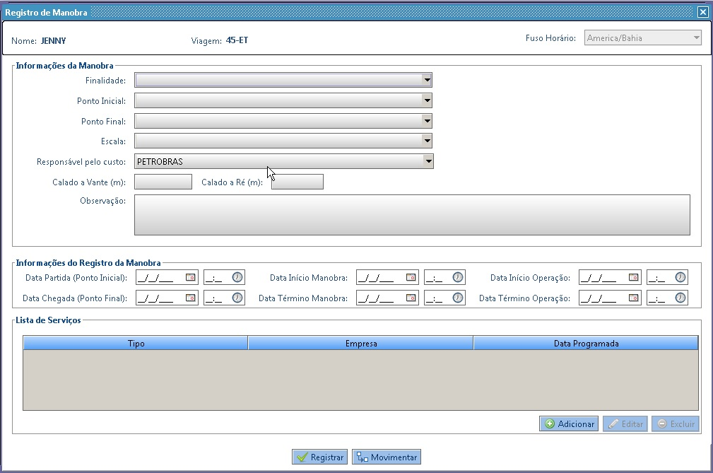

Registrar Manobra Efetuada
O registro de uma manobra efetuada, poderá ser incluído tanto a partir de uma manobra solicitada quanto de uma nova manobra
Como acessar?
Para incluir uma manobra, o usuário deverá acessar a aba Manobras e clicar no botão: Registradas
Na tela de manobras registradas, clicar no botão Registrar e selecionar as opção: Manobra Efetuada

Como preencher?
Na tela a seguir, informar os dados da manobra e clicar no botão Registrar ou Movimentar

O que acontece depois?
- Ao Registrar manobra:
- É obrigatório selecionar uma Finalidade;
- É obrigatório selecionar um Ponto Inicial;
- É obrigatório selecionar um Ponto Final;
- É obrigatório selecionar um Responsável pelo Custo;
- Caso o Responsável pelo Custo seja “Petrobras” ou “Transpetro” ou “Gás e Energia”:
- É obrigatório informar o Calado a Vante (m);
- É obrigatório informar o Calado a Ré(m);
- É obrigatório informar a Data Partida (Ponto Inicial);
- É obrigatório informar a Data Chegada (Ponto Final);
- É obrigatório informar a Data Início Manobra;
- É obrigatório informar a Data Término Manobra;
- É obrigatório informar pelo menos um Serviço e um Responsável pelo Serviço;
- A manobra ficará com o status de "Registrada".
- Ao Movimentar a embarcação antes de encerrar a manobra:
- É obrigatório selecionar uma Finalidade;
- É obrigatório selecionar um Ponto Inicial;
- É obrigatório selecionar um Ponto Final;
- É obrigatório informar a Data de Término da Manobra;
- A manobra ficará com o status de "Pré-registrada";
- De acordo com a Finalidade selecionada, realizar a movimentação da Embarcação para a posição adequada:
- Fundeio de Entrada => Fundeado na Entrada
- Fundeio de Saída => Fundeado na Saída
- Fundeio para Reatracação => Fundeado para Reatracação
- Desatracação para Fundeio => Fundeado
- Troca de Fundeadouro => Fundeado
- Atracação => Atracado
- Troca de Píer => Atracado
- Troca de Ponto Operacional => Atracado
- Desatracação para Saída => Saído
- Saída de Fundeio => Saído
- Troca de Porto => Saído
- Ship to Ship => Não muda o status da embarcação
- Navegação => Não muda o status da embarcação
- Não será gerada nenhuma pendência.